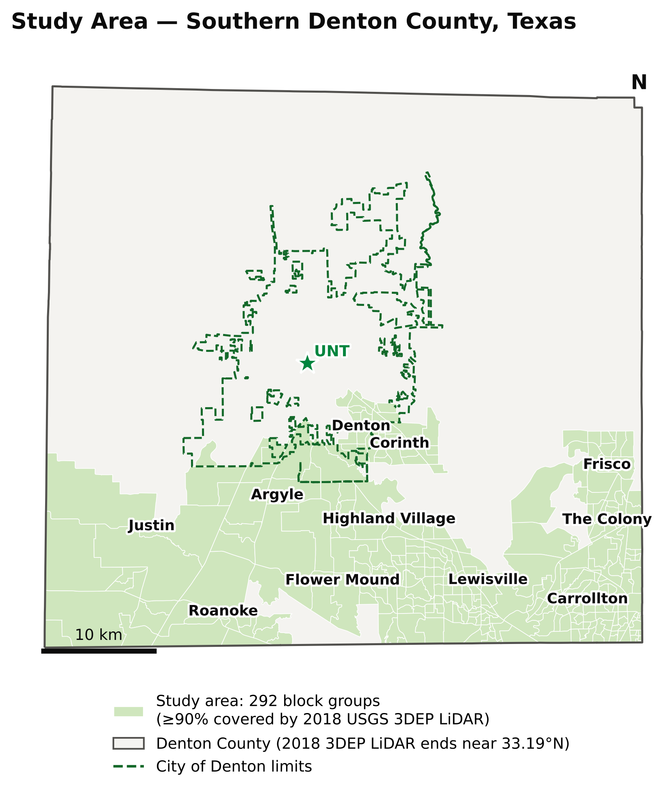
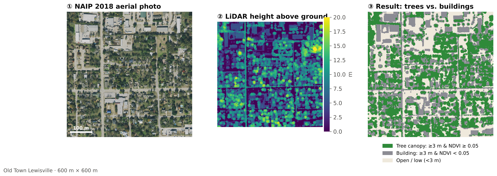
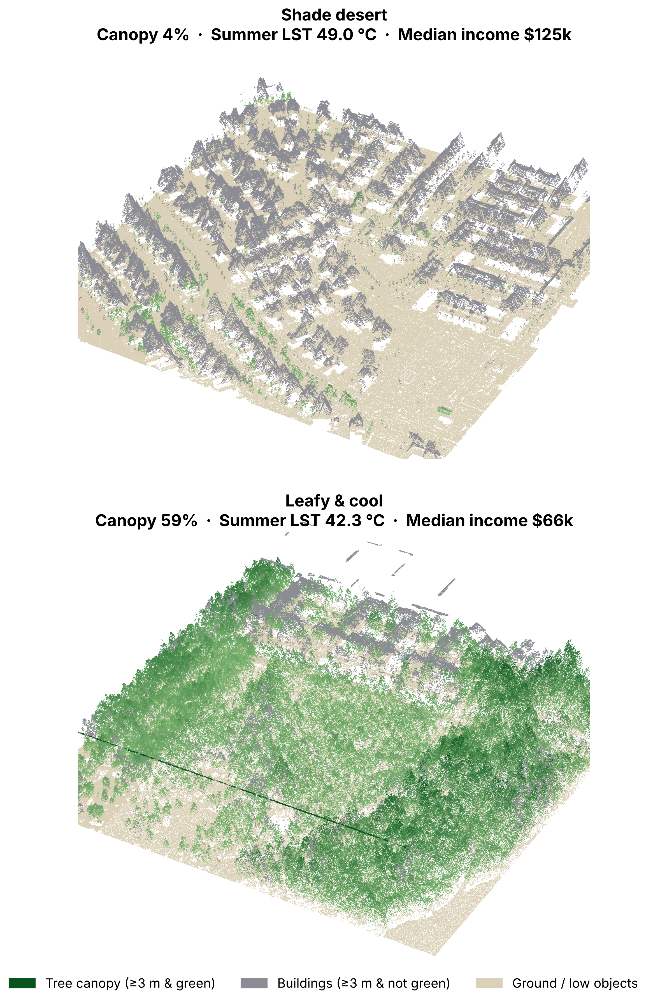
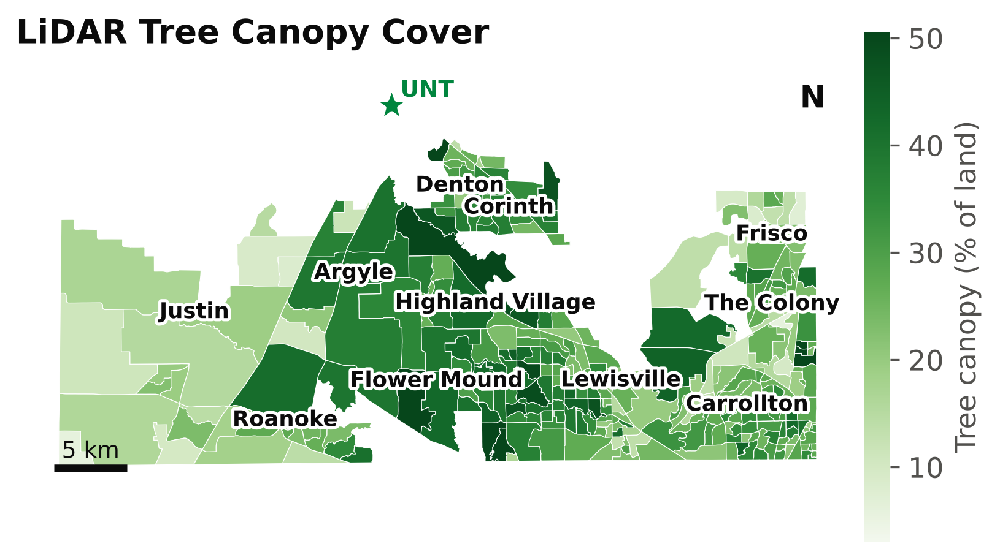
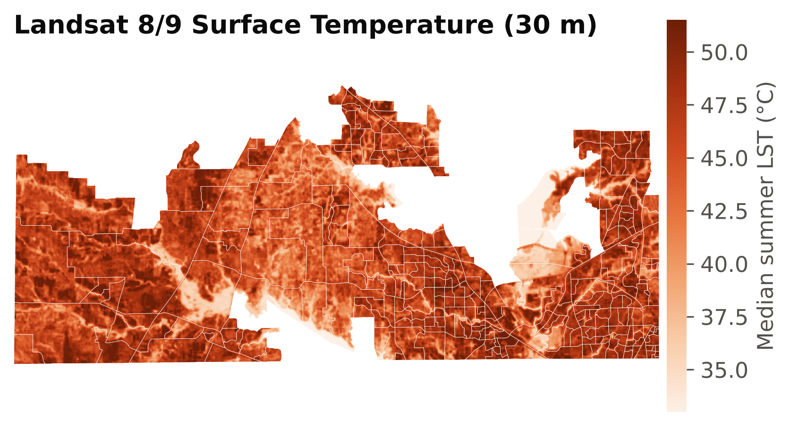
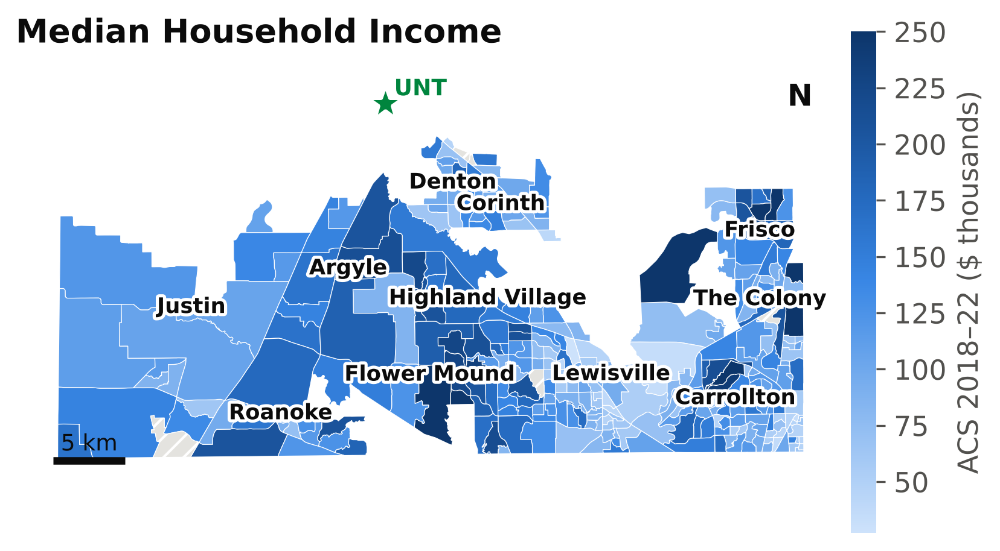
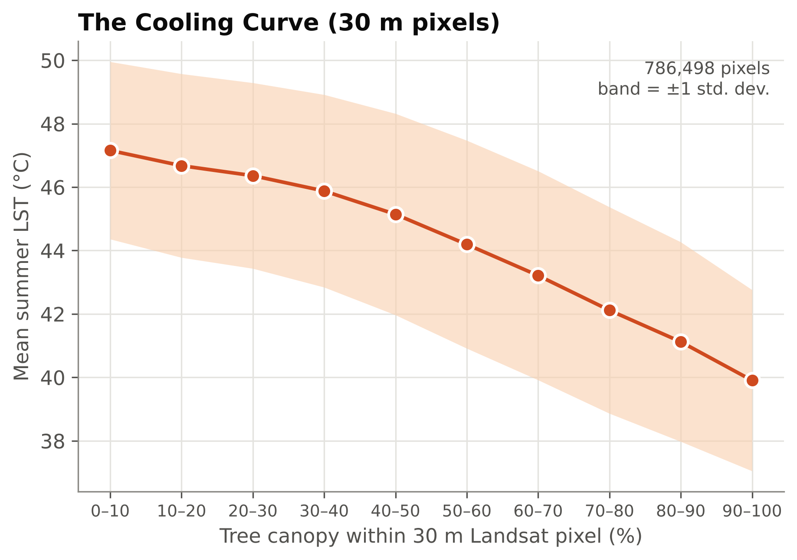
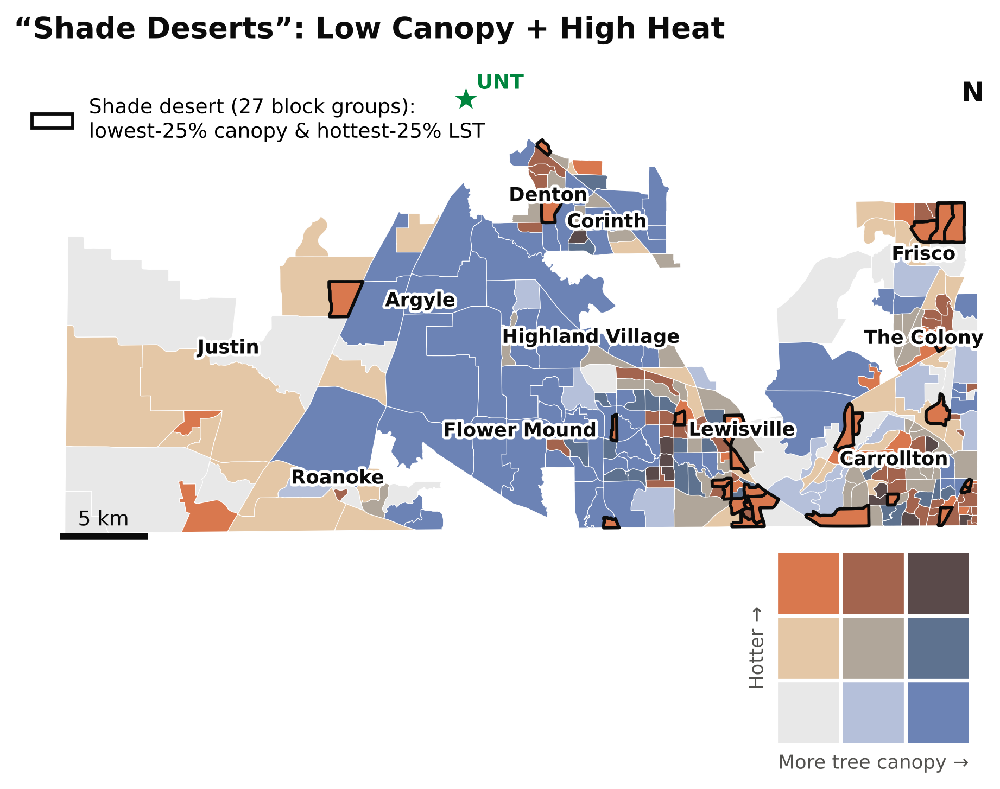
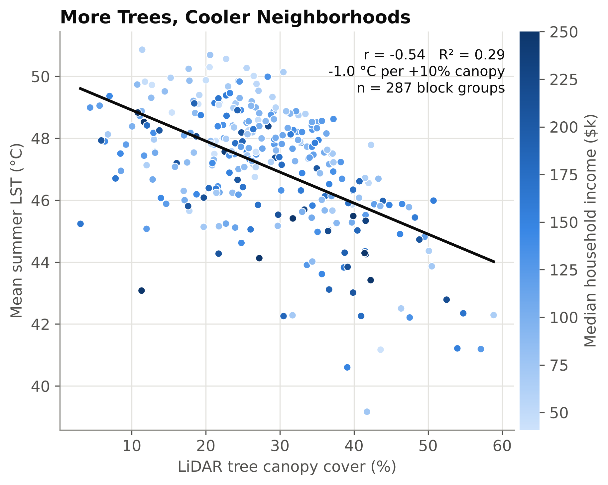
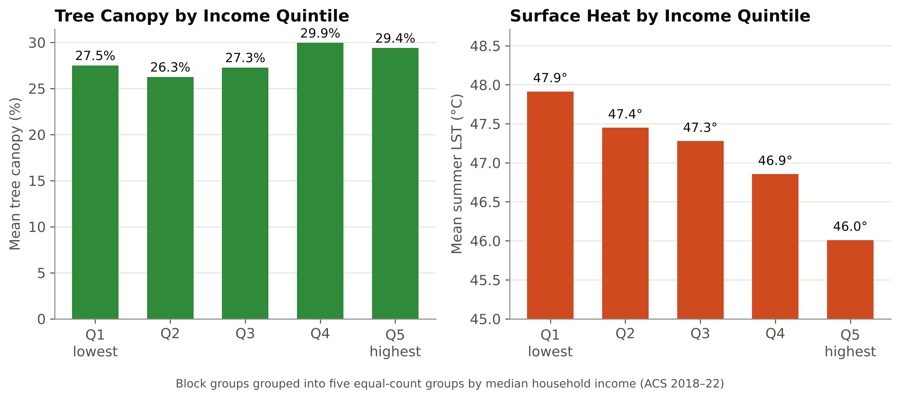

1Why it matters
North Texas summers are getting hotter, and heat is the deadliest weather hazard in the U.S. Trees are a city's natural air-conditioning: their shade and transpiration cool streets, roofs and people. But tree canopy is not shared equally.
Airborne LiDAR measures the 3-D height of every tree and building, so we can map real canopy, not just "green pixels", across a whole county at 2 m resolution.
Why LiDAR, not just satellite "greenness"?
- Grass and trees are both green, but only trees give shade. LiDAR height separates them.
- Measures every tree crown at 2 m, so it catches single street trees.
- Gives tree height (mean 9.6 m here) and 3-D structure.
2Research questions
- How much tree canopy does each neighborhood have, measured with LiDAR?
- Do low-canopy neighborhoods have hotter summer surfaces?
- Are "shade deserts" (low canopy + high heat) concentrated in lower-income neighborhoods?
3Study area & data

287 census block groups · 535,601 residents · 742 km². Limited to areas fully covered by the 2018 USGS 3DEP LiDAR (north Denton incl. UNT main campus not yet covered).
| Dataset | Res. | Use |
|---|---|---|
| USGS 3DEP airborne LiDAR (2018) | 2 m | Height above ground |
| USDA NAIP imagery, RGB-NIR (2018) | 0.6 m | NDVI: trees vs. roofs |
| Landsat 8/9 surface temp., 17 clear summer scenes (2018–22) | 30 m | Heat |
| Census ACS 5-yr (2018–22), TIGER/Line | Block group | Income, population |
4Methods
building = HAG ≥ 3 m AND NDVI < 0.05

LiDAR + NAIP classification in Old Town Lewisville. Spot-check vs. raw LiDAR points on a 1 km tile: 82% agreement on ≥3 m cells.
5Seeing the difference in 3-D

Raw 2018 LiDAR points (≈1.5–1.8 million per 600 × 600 m view). Same county, same summers: a 6.7 °C difference in surface temperature.
6Mapping canopy, heat & income




Overall LiDAR canopy cover: 26.5% (block groups range 3–59%). Mean summer surface temperature ranges 39–51 °C.
7Where are the shade deserts?

27 block groups are shade deserts, home to 48,677 people: average canopy 14.7% vs. 26.5% overall, and 49.4 °C summer surfaces. Many sit along the dense I-35E corridor and in fast-growing new subdivisions in the east.
| City (≥5 block groups) | Block groups | Avg. canopy | Avg. LST | Shade deserts | Residents in them |
|---|---|---|---|---|---|
| Lewisville | 66 | 27% | 47.8 °C | 11 | 14,389 |
| Carrollton | 47 | 26% | 47.7 °C | 4 | 9,023 |
| Flower Mound | 38 | 37% | 45.9 °C | 2 | 2,980 |
| Dallas | 21 | 28% | 48.8 °C | 3 | 3,966 |
| The Colony | 20 | 27% | 47.0 °C | 1 | 1,609 |
| Frisco | 17 | 18% | 47.2 °C | 3 | 9,733 |
| Denton | 14 | 26% | 47.8 °C | 2 | 5,082 |
| Unincorporated | 13 | 27% | 45.6 °C | 1 | 1,895 |
| Corinth | 12 | 33% | 46.8 °C | 0 | 0 |
| Fort Worth | 8 | 15% | 46.9 °C | 0 | 0 |
| Roanoke | 5 | 24% | 47.1 °C | 0 | 0 |
8Results


Canopy explains heat even after accounting for buildings and population density (-1.0 °C per +10% canopy; model R² = 0.72). Canopy itself differs only weakly by income (ρ = 0.13); dense, built-up development drives much of the income–heat gap.
9Takeaways
- Trees cool: every 10% more canopy ≈ 1 °C cooler surfaces.
- Heat is unequal: lower-income neighborhoods are ~2 °C hotter; shade deserts have 26% lower incomes.
- New subdivisions are vulnerable too: young developments with few mature trees can be the hottest places.
- Action: prioritize planting in the 27 shade deserts, require shade trees in new developments, and use LiDAR to monitor canopy over time.
Limitations: land surface temperature ≠ air temperature; 2018 LiDAR vs. 2018–22 heat & census; block-group averages (ecological fallacy); correlation, not causation.
References: Ziter et al. (2019) PNAS 116:7575 · Hoffman, Shandas & Pendleton (2020) Climate 8:12 · McDonald et al. (2021) PLOS ONE 16:e0249715 · Data: USGS 3DEP, USDA NAIP, USGS Landsat C2 L2, U.S. Census ACS, via Microsoft Planetary Computer.
All Python scripts are reproducible from free data.
github.com/123sudhi/123sudhi.github.io
/tree/main/lidar-denton